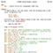
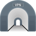

Android IMSI-Catcher Detector (AIMSICD)
Androidille tarkoitettu avoimen lähdekoodin projekti joka pyrkii havaitsemaan ja välttämään valetukiasemia (IMSI-Catcher) tai muita tukiasem…

AntiPrism
Live USB/memory card OpenELEC-based media server toolbox platform for securing the online presence, web browsing and communications.

ArkOS
arkOS on kevyt ohjelmistopino Raspberry Pi:lle, jonka avulla voit ylläpitää itse verkkosivuja, sähköpostipalvelinta ja paljon muuta.


Cjdns
Cjdns on verkkoprotokolla, digitaalisten asetusten järjestelmä viestien välittämiseen tietokoneiden välillä. Sen sijaan, että tietokoneet yh…


Commotion
Käyttää matkapuhelimia, tietokoneita ja langattomia reitittimiä hajautetun mesh-verkon luomiseen.


Cryptocat
Selainlaajennos joka mahdollistaa yksityisen ja päästä päähän salatun pikaviestinnän selaimesta käsin. Cryptocat salaa viestiliikenteen "huo…


Decentraleyes
Suojaa sinua "ilmaisten" keskitettyjen sisällön jakeluverkkojen jäljitykseltä. Estää useita sisältöpyyntöjä moniin jakeluverkkoihin ja korva…


DragonFly BSD
DragonFly BSD on vapaa Unix:in kaltainen käyttöjärjestelmä, ja on alunperin forkkaus FreeBSD 4.8:sta. Matthew Dillon toimi Amigan ohjelmisto…



eCryptfs
POSIX-yhteensopiva yritystason kryptografinen (stacked-tyyppinen) tiedostojärjestelmä GNU/Linux järjestelmiin.


Enigmabox
Plug and play cjdns ohjelmisto. Tarjoaa hajautetun, päästä päähän salatun VoIP ja sähköpostipalvelun.


Exim
MTA:ta käytetään noin 43%:ssa kaikista sähköpostipalvelimista—oletuksena Debian GNU/Linux:issa.


FreedomBox
FreedomBox integroi yksityisyyden suojaavia toimintoja yksinkertaiseen palvelimeen tuoden yksityisyyden kaikille.

Freenet
Freenet on vapaa ohjelmisto jolla voi jakaa anonyymisti tiedostoja, ja jolla voi selata ja julkaista verkkosivuja Freenetin sisällä, sekä ke…

FreeOTP
FreeOTP is a two-factor authentication application for systems utilizing one-time password protocols.


Freifunk
Epäkaupallinen ruohonjuuriliike joka pyrkii tukemaan avoimia radioverkkoja ympäri maailmaa.

Gajim
Kevyt ja nopea pikaviestiohjelma GNU/Linux ja Windows käyttöjärjestelmiin—OTR -salaus on saatavilla liitännäisenä.


GPG for Android
Porttaus GnuPG 2.1: työkaluista Androidille.
Gnu Privacy Guard (GPG) antaa mahdollisuuden hallita koko GnuPG salausohjelmistoa. GnuPG on GN…

Gpg4win
Gpg4win on asennuspaketti Windowsille (XP, Vista, 7 and 8), joka sisältää työkaluja sekä Saksan tietoturvaviraston käyttöohjeita sähköpostin…


HTTPS Everywhere
Pyrkii käyttämään salattua yhteyttä verkkosivustoon jos sellainen on ylipäätään tarjolla.

Hubzilla
Hubzilla is a powerful platform for creating interconnected websites (hubs) featuring a decentralized identity, communications, and permissi…

I2P
I2P on anonyymi verkko, joka antaa ohjelmien kommunikoida keskenään salatusti ja anonyymisti. Kaikki viestintä on päästä päähän salattu. I2P…


iRedMail
Asenna ja konfiguroi sähköpostipalvelinpaketit automaattisesti GNU/Linux ja BSD järjestelmiin.


JonDo Live CD
Live CD/USB joka perustuu Debian:iin. Jakeluun on sisällytetty työkaluja mm. anonyymiin verkkoselaamiseen.


KeePassDroid
KeePassDroid is an implementation of the KeePass Password Safe for Android. Read/write support for .kdb and KeePass 1.x. Read/write support …
KeePassX
Application for people with extremely high demands on secure personal data management. Saves many different types of information such as use…

Kolab
Groupware ratkaisu sähköpostille, tiedostoille, kalentereille, osoitekirjoille ja mobiilisynkronoinnille.

Kolab Now
Secure Kolab accounts hosted in Switzerland for 8.99 CHF per month or 4.55 CHF for email-only accounts.


Kontalk
Phone number based messaging client for the masses, using XMPP and OpenPGP encryption. Backed by community-driven servers.


Litecoin
Litecoin (sign : Ł ; code : LTC) on peer-to-peer kryptovaluutta ja avoimen lähdekoodin, MIT/X11 lisensoitu ohjelmistoprojekti. Bitcoinin (BT…


Metronome
Prosodyyn perustuva XMPP palvelin, edistyneillä hallinta- ja mikrobloggausominaisuuksilla.


NetBSD
NetBSD on avoimen lähdekoodin Unixin kaltainen käyttöjärjestelmä joka polveutuu Berkeley Software Distribution:ista (BSD), Unix johdannaises…


nsupdate.info
Vapaa dynaaminen DNS-palvelu. Ohjelmalla saat helposti muistettavan DNS-nimen vaihtuvan ja vaikeasti muistettavan IP-osoitteen tilalle. Käyt…

Off-the-Record Messaging
Päästä päähän salatut keskustelut Pidginille.
Off-the-Record viestintä (lyh. OTR) on kryptografinen protokolla, joka tarjoaa vahvan salauks…


Open Source Routing Machine
Open Source Routing Machine tai OSRM on C++ implementaatio suorituskykyisestä reititysmoottorista lyhimmille reiteille tieverkoissa. Lisenso…


Orweb
Proxy-capable and Privacy-aware Web Browser for use with Orbot's localhost 8118 proxy, or any HTTP proxy server.
OsmAnd
OsmAnd (OSM Automated Navigation Directions) on kartta ja navigointiohjelma joka käyttää OpenStreetMapin dataa.

Ostel
Guardian Projectin tarjoamia, turvallisia SIP-tunnuksia ohjelmille kuten CSipSimple, Jitsi jne.


PasswdSafe
Password Safe (Android Porttaus). Tallentaa salasanat, verkkosivujen URLit, sähköpostiosoitteet, muistiinpanot ja paljon muuta salattuun tie…
Password Safe
Bruce Schneierin suunnittelema Password Safe (Windows/Linux) tallentaa salasanat, verkkosivujen URLit, sähköpostiosoitteet, muistiinpanot ja…


Privacy Badger
Tracking blocker that tries to learn who is spying on you and then blocks these ads and invisible trackers.


Qubes
Fedora/Xen-pohjainen käyttöjärjestelmä, joka on suunniteltu turvalliseksi eristämällä ohjelmistot toisistaan.

Random Agent Spoofer
A privacy enhancing firefox add-on which aims to hinder browser fingerprinting.


Ring
Ring is a secure and distributed voice, video and chat communication platform that requires no centralized server and leaves the power of pr…

Riot
Riot is a secure collaboration app for group chat, file transfer and voice/video conferencing built on the decentralized Matrix ecosystem, p…


Scientific Linux
Scientific Linux (SL) on European Organization for Nuclear Research:in (CERN) ja Fermi National Accelerator Laboratory:n tuottama GNU/Linux …


Self-Destructing Cookies
Automaattisesti poistaa evästeet ja paikalliset tiedostot, kun niitä käyttävät välilehdet selaimessa suljetaan.
SemanticScuttle
SemanticScuttle is a social bookmarking tool experimenting with features like structured tags and collaborative tag descriptions.


SME Server
Minimalistinen jakelu, joka perustuu CentOS:iin. Sisältää mm. esikonfiguroidun sähköpostin, tiedoston jaon, web-palvelimen.


Tails
TAILS on Debian-pohjainen GNU/Linux livekäyttöjärjestelmä jonka voi käynnistää millä tahansa tietokoneella joko DVD-levyltä, USB-muistilta t…

tinc
Vapaa ohjelmisto-daemon, joka käyttää tunnelointia ja salausta turvallisen yksityisverkon luomiseen.

Tor
Tor, (aiemmin TOR, lyhenne nimestä 'The Onion Router') on vapaa ohjelmisto joka mahdollistaa anonyymin Internetin käytön.
Tor ohjaa Interne…
Tor Browser Bundle
Tor Browser bundle on Mozillan Firefoxiin perustuva verkkoselain, joka mahdollistaa anonyymin verkkoselaamisen GNU/Linux, Windows ja OSX käy…

TorBirdy
Laajennus jolla Thunderbird ja Icedove voivat anonymisoida verkkoliikenteen Tor-verkon kautta.

Tox
Vapaa ja avointa lähdekoodia oleva, peer-to-peer, salattu pikaviestiohjelma joka tukee videopuheluita. Projektin tavoitteena on tarjota turv…

Tunnelblick
Tunnelblick is a free, open source graphic user interface for OpenVPN on macOS. It provides easy control of OpenVPN client and/or server con…


wallabag
wallabag is a self hostable application for saving web pages. Unlike other services, wallabag is free (as in freedom) and open source.


Whonix
VM-ystävällinen Debian-pohjainen GNU/Linux-jakelu. Järjestelmä pyrkii olemaan turvallinen ja yksityinen mm. Tor-reititystä tukemalla.
WikiSuite
The most comprehensive and integrated Free / Libre / Open Source software suite ever developed.